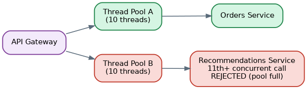
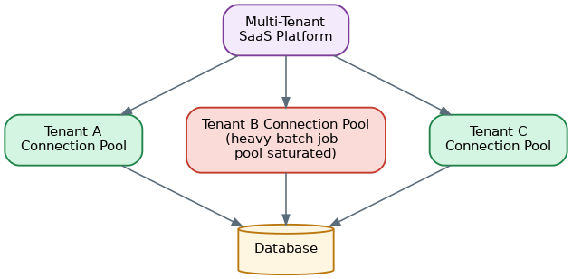

Bulkhead Pattern
Table of Contents
Overview
Old ships were built with their hulls divided into separate watertight compartments called bulkheads. If the hull is punctured and one compartment floods, the walls between compartments keep the water from spreading, so the ship stays afloat even though it's damaged. The Bulkhead pattern borrows this idea directly for software: instead of letting every part of a system share one common pool of resources, you divide those resources into isolated compartments so that trouble in one part cannot flood into the rest.
In a microservices system, "resources" usually means things like threads, connections, or memory used to talk to other services. Without any isolation, all of an application's outgoing calls might share one common pool of, say, worker threads. If a single downstream dependency starts responding slowly, calls to it pile up and consume more and more of that shared pool — starving out calls meant for completely unrelated, perfectly healthy services. The Bulkhead pattern fixes this by giving each dependency, or each type of workload, its own dedicated slice of resources: if one compartment gets overwhelmed, only that compartment suffers, and everything else keeps working. It's one of the core resilience patterns used alongside the Circuit Breaker and Retry patterns to keep distributed systems standing even when parts of them are having a bad day.
The Problem: Failure Propagation in Distributed Systems
Sharing resources looks efficient at first glance — why maintain ten separate thread pools when one big pool can serve everybody? The trouble shows up the moment a single dependency misbehaves. Imagine an API gateway that calls five backend services, with every outgoing call drawing from the same shared pool of 50 threads. If one of those five services becomes slow — rather than failing outright — every call to it holds onto a thread far longer than usual. As more requests for that slow service keep arriving, more and more threads from the shared pool get tied up waiting on it, until eventually there are no threads left for calls to the other four services, even though those services are completely healthy.
From the outside, it looks like the entire gateway has gone down, when in reality only one dependency was ever a problem. This is often called the "noisy neighbor" problem — a single workload with worse performance characteristics ends up starving out its neighbors that happen to share the same resource pool. A well-known real-world instance of this occurred at Netflix in 2012: a slow user-ratings call ended up consuming so much of a shared thread pool that it dragged down unrelated features like recommendations, search, and even the homepage, all of which happened to draw from that same pool. That incident became a driving reason Netflix built resilience libraries that isolated resources per dependency rather than sharing them.
The Bulkhead Solution
The fix is to stop sharing. Instead of one pool of resources serving every outgoing call, each dependency — or each category of workload — gets its own dedicated, limited pool. If the recommendations service is slow, only the small pool of resources set aside for recommendations gets exhausted; calls to payments, search, or the user profile service keep flowing through their own separate pools, completely unaffected.
This containment is the entire point of the pattern. It trades away a small amount of efficiency — some pools may sit partly idle while others are busy — in exchange for a much more important guarantee: that failure stays contained to the compartment where it started, instead of spreading far enough to sink the whole system.
The Architecture
Bulkheads can be applied at more than one level of a system, and most real deployments use a mix of both:
- Application-level bulkheads — inside a single service, calls to different downstream dependencies are each backed by their own thread pool, connection pool, or a lightweight counter called a semaphore that limits how many concurrent calls to that dependency are allowed at once. This is the finest-grained form of isolation and is usually handled by a resilience library.
- Infrastructure-level bulkheads — at a larger scale, entire services (or groups of services) are deployed onto separate containers, virtual machines, or Kubernetes nodes, each with its own CPU and memory quota. This is a coarser but very effective form of isolation: even if one service completely crashes or consumes all of its own memory, it cannot take resources away from a service running on separate infrastructure.
Database and connection pools are another common place to apply the same idea — giving each microservice, or even each noisy downstream call within a service, its own dedicated connection pool to a shared database, rather than letting every caller draw from one central pool that a single runaway query could exhaust.

The Inner Workings
At the application level, there are two common isolation strategies, both popularized by Netflix's Hystrix library and carried forward by newer tools like Resilience4j:
- Thread pool isolation — each dependency gets its own small, fixed-size pool of worker threads, and calls to that dependency can only ever draw from its own pool. If the pool is full, new calls are rejected immediately (fail fast) rather than queued indefinitely, which keeps the caller from piling up work while waiting for a slot to open.
- Semaphore isolation — instead of a full thread pool, a lightweight counter simply limits how many concurrent calls to a dependency are allowed at any moment, without switching to a separate thread. This has lower overhead than thread pools, but offers less protection against a dependency that hangs for a very long time, since it doesn't stop the original calling thread from blocking.
Sizing each pool correctly is the key design decision: a pool that's too small will reject requests even under perfectly normal load, while a pool that's too large defeats the purpose of isolating and containing failure in the first place.
An Example
Imagine an API gateway that calls two backend services — an Orders service and a Recommendations service — with each given its own dedicated thread pool of 10 threads.
- A burst of normal traffic arrives; both Orders and Recommendations respond quickly, and each pool has threads to spare.
- The Recommendations service suddenly starts hanging for 10 seconds per call instead of its usual 200 milliseconds.
- Calls to Recommendations start occupying all 10 threads in its dedicated pool. The 11th, 12th, and further concurrent calls to Recommendations are rejected immediately with a "service busy" fallback, rather than queuing up and making customers wait.
- Meanwhile, the Orders service's separate pool of 10 threads is untouched — Orders calls continue to succeed normally, and customers can still complete checkout even though recommendations are temporarily unavailable.
- Once Recommendations recovers, its pool empties out and calls succeed again, all without Orders ever having been affected.
Performance Implications and Special Considerations
Maintaining multiple separate pools instead of one shared pool does use a little more memory and can leave some pools under-used while others are busy — that overhead is the deliberate trade-off for containment. The bigger practical challenge is sizing: pools that are too small cause unnecessary rejections during normal traffic spikes, while pools that are too large use up more resources without actually preventing the exhaustion problem the pattern exists to solve.
Ongoing monitoring of pool utilization — how full each pool typically runs, and how often calls are being rejected — is essential to tune these sizes correctly over time, especially as traffic patterns change. Infrastructure-level bulkheads (separate containers, nodes, or clusters) provide stronger isolation but cost more, since idle capacity in one compartment can't be borrowed by another even when it's desperately needed elsewhere.
System Design Examples
Netflix's API gateway is a widely cited example: it fans out to dozens of backend services (user profiles, video metadata, billing, device registration, recommendations, and more), and each of those downstream calls is given its own dedicated thread pool through Hystrix, so a slowdown in any single backend cannot exhaust the gateway's overall capacity.
Kubernetes deployments apply the same idea at the infrastructure level: assigning CPU and memory requests/limits and namespaces per service (or per team) acts as a bulkhead, ensuring one misbehaving pod cannot starve every other workload on the same cluster of resources.
A multi-tenant SaaS platform is another common example: rather than processing every customer's requests through one shared queue or connection pool, the system gives each tenant (or each tier of tenant, such as "free" versus "enterprise") its own dedicated pool of capacity, so one customer's unusually heavy or buggy usage cannot degrade the service for every other customer sharing the platform.
